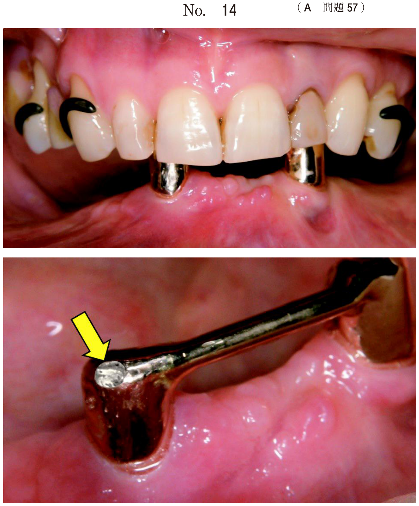
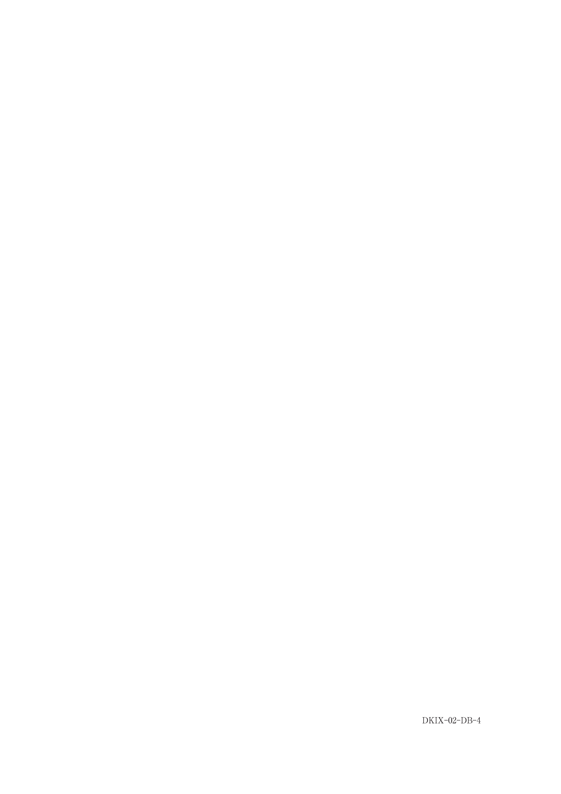

顎変形症に対する外科的矯正手術を顎矯正手術という。治療は術前矯正→顎矯正手術→術後矯正の流れで進行する。
上顎骨を下鼻道の高さで水平に骨切りし、上顎骨片を完全に遊離させて理想的な位置に移動させる方法。上顎の前後的・垂直的・側方移動が可能で、最も汎用性の高い上顎骨切り術である。
上顎前方歯槽部を後方に移動させる方法。上顎前突の矯正に用いる。
Le Fort I型骨切り術時に骨延長装置を装着し、一定期間後から骨延長を開始する。Le Fort I型では困難な重度の上顎劣成長に適応。
下顎枝を矢状方向に内外の骨片に分割する方法。最も汎用性の高い下顎骨切り術である。
下顎枝を垂直方向に骨切りして下顎を後方に移動させる方法。
下顎前方歯槽部を後方・垂直方向に移動させる方法。下顎前歯部の開咬などに適応。
オトガイ部の骨を水平に骨切りし、オトガイの位置や形態を修正する方法。他の骨切り術と併用されることが多い。
骨切り術では、術式に応じた重要血管の走行を熟知し、損傷を回避することが重要である。
| 術式 | 注意すべき血管 | 損傷時のリスク |
|---|---|---|
| Le Fort I型 | 下行口蓋動脈 | 上顎骨壊死（上顎骨への主要血流が遮断） |
| 下顎骨切り術 （SSRO・IVRO等） |
舌下動脈 オトガイ下動脈 |
口腔底出血 → 上気道閉塞 |
| SSRO | 下歯槽神経 | 下唇・オトガイ部の知覚麻痺 |
咬み合わせの異常を訴える患者に行った手術時の写真（別冊No.20）を別に示す。術中損傷によって、上顎骨の壊死を起こす危険性があるのはどれか。1つ選べ。

【解説】写真はLe Fort I型骨切り術の術中所見。Le Fort I型で上顎骨を完全に遊離させた後、上顎骨への主要な血流供給源は下行口蓋動脈（e）である。この動脈を損傷すると上顎骨への血流が途絶し、上顎骨壊死を引き起こす危険がある。頬動脈（a）、顔面動脈（b）、眼窩下動脈（c）、浅側頭動脈（d）は上顎骨の生存に直接関与する主要血管ではない。
下顎の偏位を主訴とする患者に行った手術時の写真（別冊No.4）を別に示す。術中損傷によって、術後に気道閉塞を起こす危険性があるのはどれか。2つ選べ。

【解説】写真は下顎枝矢状分割法（SSRO）の術中所見。下顎骨切り術で舌下動脈（b）やオトガイ下動脈（e）を損傷すると、口腔底に出血が貯留して急速に腫脹し、舌が挙上されて上気道閉塞を引き起こす危険がある。頬動脈（a）は頬筋を栄養する小動脈、舌深動脈（c）は舌の実質内を走行する動脈、上甲状腺動脈（d）は頸部の動脈であり、いずれも下顎骨切り術で損傷して気道閉塞を起こすリスクは低い。